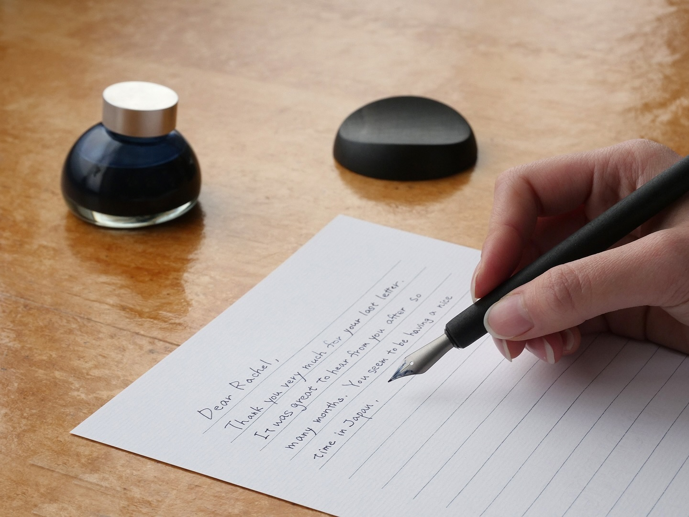
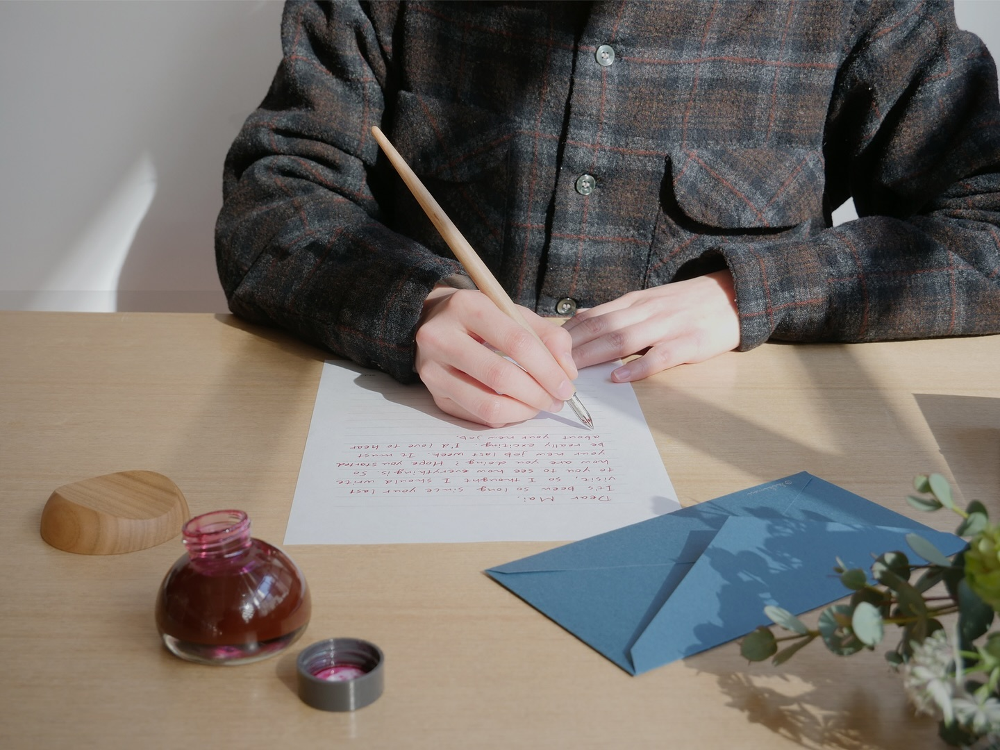
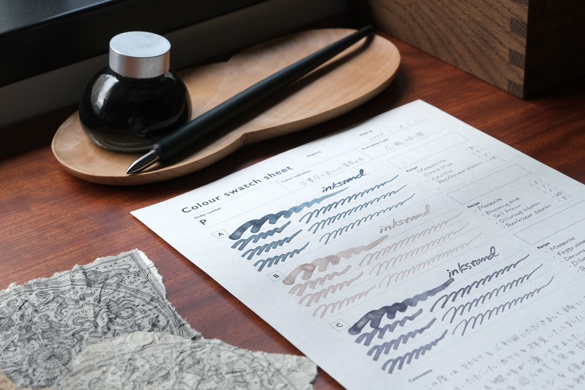
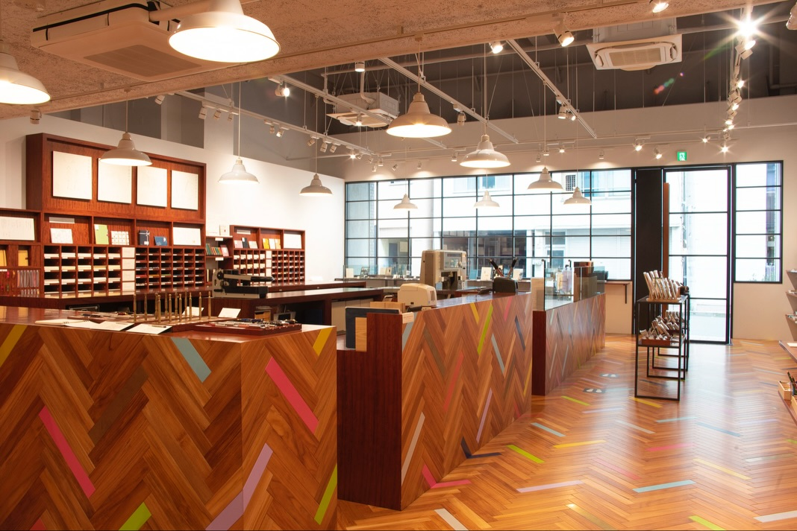
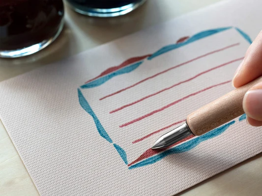

我们总是需要写字。
写名字。
写地址。
写待办事项。
写下一句话。
但很多时候，我们只是为了完成某件事情，才会拿起笔。
甚至很多时候，我们已经习惯直接用手机打字。
很少有人会停下来想：
如果写字本身就是一件值得享受的事情呢？
The Brand
KAKIMORI 是来自日本东京藏前的文具品牌与书店。
它从 2010 年开始，以 “We write with joy” 为理念， 希望重新让人感受到书写本身的快乐。
这里不仅可以买到笔、墨水、纸张和笔记本， 也可以亲自试用书写工具， 甚至根据自己的喜好制作属于自己的笔记本。
它关注的似乎并不是：
“怎样才能写得更快？”
而是：
“怎样才能让我们更喜欢写字？”

A Different Way to Write
我们总是下意识地把文具当成工具。
笔是用来写字的。
纸是用来记录的。
笔记本是用来整理事情的。
但 KAKIMORI 似乎改变了这一点。
它不只是思考：
这个东西应该怎样使用？
而是：
使用它的时候，我们会有什么感觉？
笔尖碰到纸面的声音。
墨水慢慢流出来的颜色。
纸张被手指翻动时的触感。
写下一句话以后，看见墨水最后停留在纸上的样子。
这些原本很小的事情， 开始慢慢地值得被注意。
Writing With Joy
真正让我喜欢 KAKIMORI 的， 是它很在意“使用的过程”。
不是写完以后得到什么，
而是拿起笔的那几分钟， 本身就值得被享受。
所以它的文具并不是越复杂越好。
一支笔。
一张纸。
一瓶墨水。
一个笔记本。
每一样东西都被认真对待。
KAKIMORI 的许多书写工具都可以在购买之前亲自试用， 让人先感受纸张、笔尖和墨水之间的关系， 再决定什么真正适合自己。
这种体验让我想到：
我们有时候并不是缺少一本新的笔记本。
而是已经太久没有
静下来慢慢感受写字本身这件事。

Choose What Feels Like You
KAKIMORI 有一个很特别的地方：
它不会替你决定一切。
例如它提供 order-made notebook。
你可以选择：
封面。
纸张。
装订方式。
烫印英文字母。
再把这些不同的部分组合成属于自己的笔记本。
这让我觉得， 它真正出售的并不只是一本 notebook。
而是一种：
“我可以自己决定。”
同样的一本笔记本，
因为不同的纸张、
不同的颜色、
不同的装订，
最后可以变成完全不同的东西。
它不需要成为「最好看」的那一本。
只需要
成为最适合你的那一本。
A World of Ink
KAKIMORI 的墨水，也是我觉得很有趣的一部分。
它们并不只是简单地把颜色分成：
蓝色、红色、绿色。
每一种颜色都有自己的名字和意象。
有些颜色安静。
有些颜色轻快。
有些颜色很难用一句简单的颜色名称解释。
而当墨水真正落到纸上， 颜色又会因为纸张、笔尖和书写方式， 产生一点细微的变化。
于是，墨水不再只是“写字用的东西”。
它开始变成一种表达。
同一句话， 换一种颜色， 感觉也可能完全不同。
KAKIMORI 的墨水还可以通过不同颜色之间的组合产生新的色彩， 而 Dip Pen 则让换颜色变得非常直接—— 蘸取、书写、用水清洗，再换下一种颜色。
这让我想到：
我们有时候选择一种颜色， 其实也是在选择一种今天想留下来的感觉。
字迹不是只有内容。
颜色也是内容的一部分。

The Beauty of Choosing Slowly
现在的生活，很多事情都可以很快完成。
买东西很快。
发消息很快。
记录事情很快。
甚至连阅读，都越来越习惯快速滑过。
但 KAKIMORI 让我想到：
有些事情，也许不需要那么快。
挑一张纸。
选一支笔。
试一个颜色。
写下一句话。
然后停下来看看。
这些动作不是为了提高效率。
却可能让一个普通的下午， 变得稍微特别一点。
A Place for Makers
KAKIMORI 位于东京藏前。
这里过去就和制造、工艺以及小型工作室有着很深的联系。
所以当你走进 KAKIMORI， 会觉得这里卖的好像不只是文具。
你会看到纸张、墨水、笔和各种书写工具， 也会想到它们背后的材料、制作和人。
一件看起来很小的东西， 其实也有自己的制作过程。
KAKIMORI 也把自己看作这个街区里的 storyteller—— 不是单纯销售文具， 而是通过设计、制造、服务， 以及和供应商、工匠与制造者的合作， 把人与物之间的关系重新带回日常。
所以它吸引我的地方， 不只是“东西很好看”。
而是你能感觉到：
这些东西是有人认真做出来的。
一张纸。
一个笔尖。
一个墨水瓶。
一本 notebook。
每一个看起来很小的东西， 背后都有材料、工艺和人的参与。
这也让 KAKIMORI 的文具， 不像是一个已经完成的答案。
更像是：
等待使用者参与进去的一部分。

Made to Be Used
KAKIMORI 的美， 不是那种需要小心保护的美。
它更像是：
拿起来使用。
写一点。
画一点。
用久一点。
让墨水沾到纸上， 让笔留下使用过的痕迹。
因为真正被使用过的东西， 才会慢慢拥有属于自己的样子。
官方也特别强调， 希望这些笔、墨水、纸张和笔记本成为能够被珍惜和长期使用的日常工具。
它甚至允许使用者在购买之前试用书写工具和纸张。
先写，再决定。
这件事情其实很简单， 但我很喜欢。
因为在很多时候， 我们太习惯先问：
“它好不好？”
KAKIMORI 更像是在问：
“它适不适合你？”
Why Soft Archive Collects It
有些东西的意义， 不在于它有多漂亮， 而在于它有没有让我们愿意真正使用它。
KAKIMORI 让我想到， 一支笔、一张纸， 其实也可以改变我们对时间的感受。
当我们愿意慢下来写下一句话， 那个瞬间就不再只是「记录」。
而成为了
属于自己的时间。
A Small Detail I Love
我很喜欢 KAKIMORI 允许使用者先尝试，再决定。
在这个什么都可以快速购买的时代， 它却愿意让你坐下来， 慢慢试一支笔， 感受纸张， 看看墨水真正写出来是什么样子。
它没有急着告诉你：
“这个就是最好的。”
而是让你自己找到：
“这个最适合我。”
What Caught My Attention
- KAKIMORI 把「书写的快乐」放在品牌核心。
- 可以亲自试用书写工具，而不是只能看商品。
- 可以根据自己的喜好制作 notebook。
- 纸张、笔、墨水都被当作完整体验的一部分。
- 产品不会过度装饰，而是把注意力放回书写本身。
- 我很喜欢它没有告诉我们「应该怎样写」， 而是给我们足够的空间去找到自己的方式。
Signature Piece
KAKIMORI Dip Pen
一支需要亲自蘸上墨水的笔。
它没有把书写变得更快。
反而让我们多做了一两个动作：
蘸墨。
落笔。
看着墨水慢慢流下来。
写完以后，再把笔尖洗干净。
不同的握笔角度， 也会让笔尖呈现出不同的线条。
这些动作看起来有些多余， 却恰恰让“写字”重新变成了一件需要亲自参与的事情。
也许这就是 KAKIMORI 所说的 “We write with joy”。

Archive Information
Who It's For
- ✍️ 喜欢手写的人
- 🎨 喜欢选择颜色的人
- 📖 喜欢纸张与文具的人
- ☕ 喜欢慢慢做事情的人
- 🌿 喜欢亲自创造，而不是直接购买完成品的人
Soft Archive Note
我们已经习惯了让很多事情变得更快。
快速输入。
快速记录。
快速完成。
但写字似乎没有必要一直追求速度。
一支笔蘸上墨水，
笔尖碰到纸面，
一句话慢慢浮现。
也许我们真正喜欢的，
从来不只是写下来的那几个字。
而是那几分钟里，
我们终于又回到了自己的时间里。
Sources
This archive is an independent editorial project by Soft Archive. Product names, trademarks and images belong to their respective owners. Soft Archive is not affiliated with KAKIMORI.